Grandmas' Cooking Recipes of 2024.
Contents
- Margherita Pizza
- Hakka Noodles
- Waffles
Margherita Pizza
Pizza margherita, as the Italians call it, is a simple pizza hailing from Naples. When done right, margherita pizza features a bubbly crust, crushed San Marzano tomato sauce, fresh mozzarella and basil, a drizzle of olive oil, and a sprinkle of salt.
Ingredients

- 1 (794 g) can whole San Marzano tomatoes.
- 2 small garlic cloves
- ½ teaspoon sea salt.
- Cornmeal, for stretching the dough.
- 455 gram Pizza Dough, store-bought or homemade.
- 227 gram fresh mozzarella cheese, torn or thinly sliced
- Fresh basil leaves
- Red pepper flakes, for sprinkling
Instructions
- Preheat the oven to 500 degrees Fahrenheit.
- In a food processor, place the tomatoes and their juices, olive oil, garlic, and salt. Process until smooth.
- Dust a baking sheet with cornmeal. Place the pizza dough on the baking sheet and stretch it into a large oval.
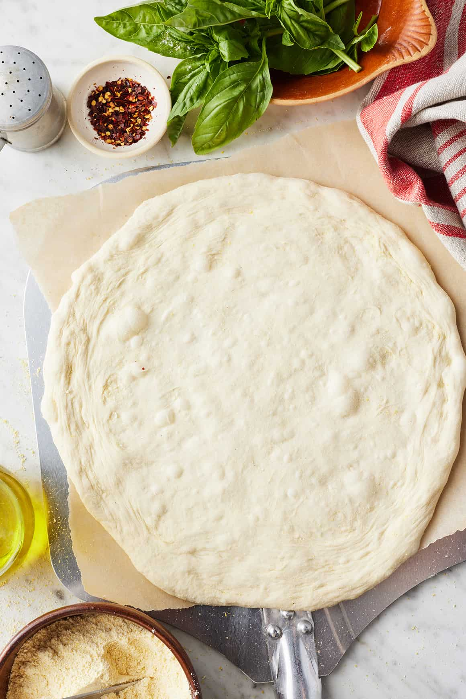
- Spread a heaping ½ cup of the tomato sauce* evenly over the pizza dough, leaving a 1-inch border around the edges.
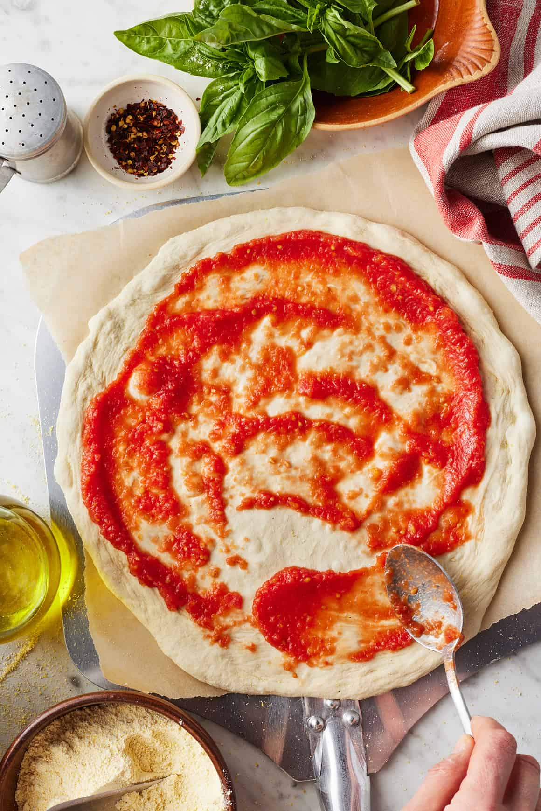
- Top with the mozzarella and transfer to the hot oven. Bake for 10 to 12 minutes, or until the crust is browned.
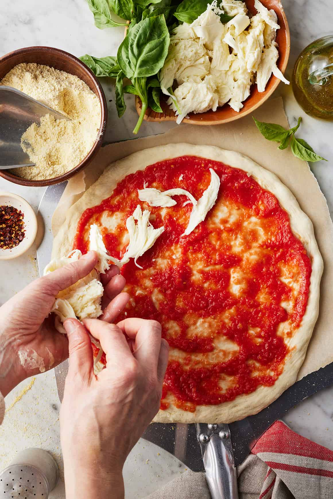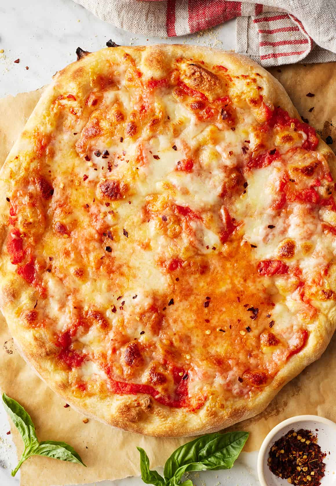
- Remove from the oven and top with fresh basil and pinches of red pepper flakes. Drizzle with olive oil and serve.
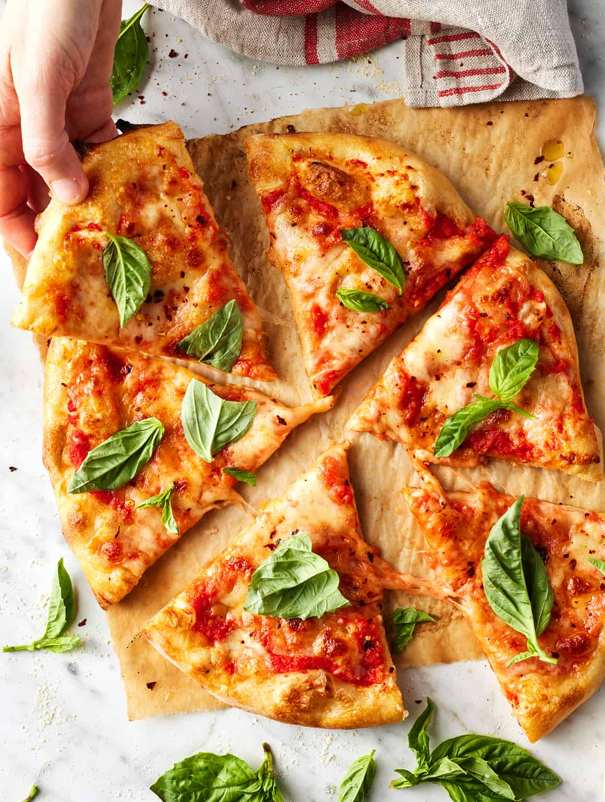
Hakka Noodles
Hakka Noodles, are an Indian - Chinese style noodles made with unleavened wheat flour. It is hugely popular in Indian Restaurants and Street Stalls. It is usually eaten with a side of Manchurian or chili dishes.
Ingredients
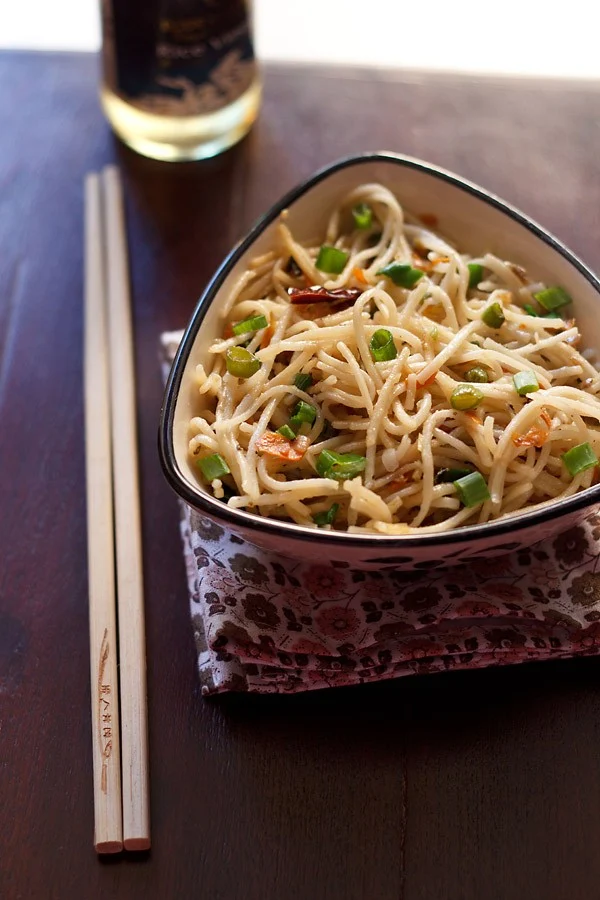
- 67 grans hakka noodles or 1 pack of Ching's hakka noodles
- 0.35 to 0.42 l water
- 0.5 teaspoons toasted sesame oil - for coating the noodles
- 0.67 tablespoons sunflower oil or any neutral tasting oil – for stir frying
- 0.67 to 1 dry red chilies – broken and deseeded or fresh green chilies, chopped
- 0.5 teaspoons finely chopped garlic
- 1 to 1.33 spring onions (scallions) small-sized – finely chopped, reserve a few greens for garnish
- 0.33 carrot – small to medium, finely chopped or shredded
- 0.33 bell pepper (capsicum) – red, green or yellow, small to medium, finely chopped or thinly sliced
- 0.33 bell pepper (capsicum) – red, green or yellow, small to medium, finely chopped or thinly sliced
- 0.5 teaspoons soy sauce (naturally brewed) or tamari – add as needed
- salt and pepper as required
Instructions
- Heat enough water in a pan with salt and a few drops of oil, till it comes to a boil.
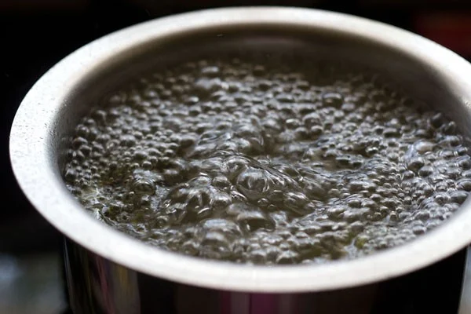
- Add the hakka noodles and cook according to the package instructions.
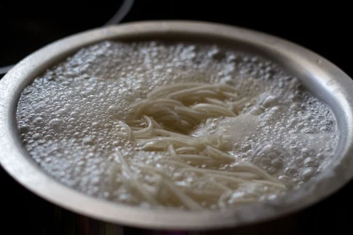
- When noodles are cooking, rinse and chop all the veggies or you can chop them before you start cooking noodles.
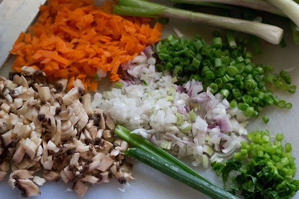
- Drain and rinse noodles in running water, so that the noodles stop cooking.
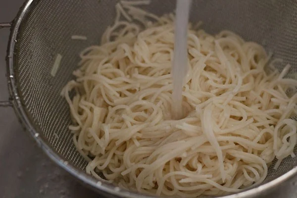
- Then add toasted sesame oil and gently mix, so that the oil gets evenly coated on them.
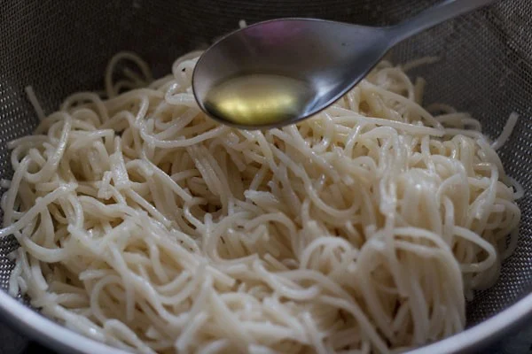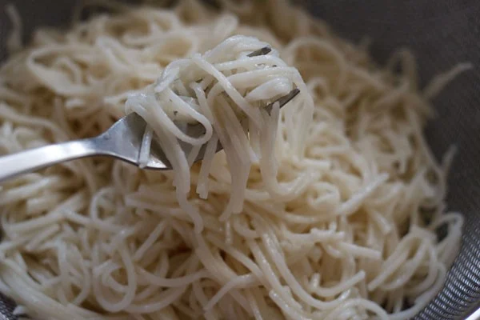
- Set the cooked noodles aside.
- Heat oil in a wok or kadai or a frying pan.
- On medium-low to medium heat, first add the dry red chilies and garlic.
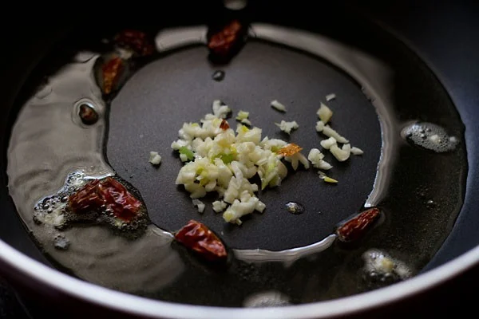
- Saute for a minute, then add the finely chopped spring onions.
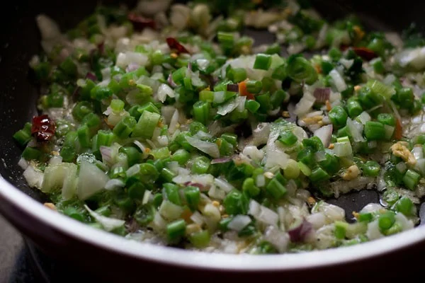
- Increase the flame a bit and stir fry for 3 minutes. For non-stick frying pans, keep the heat to medium and for cast iron or carbon steel pans or wok, use medium-high to high heat.
- Add the carrots and bell pepper (capsicum).
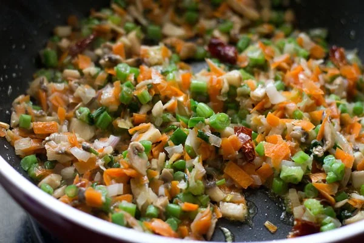
- Stir fry all the veggies on a high flame till they start getting slightly browned from the edges. This will take about 5 to 6 mins after adding the carrots.
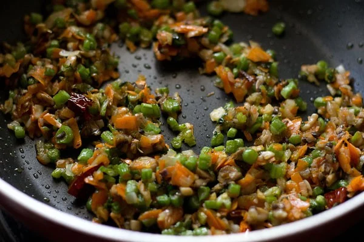
- Add soy sauce and mix well.
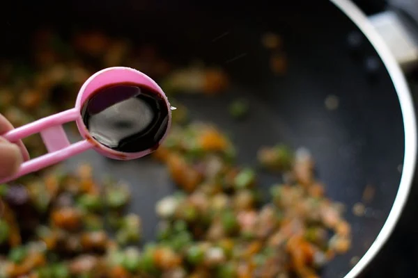
- Add noodles and toss it well and stir fry for a minute or two on high heat.
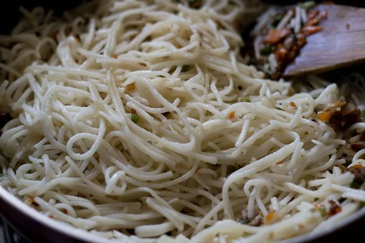
- Season with salt and pepper. Also, add rice vinegar or white vinegar. Continue to toss and cook on a high flame for a minute.
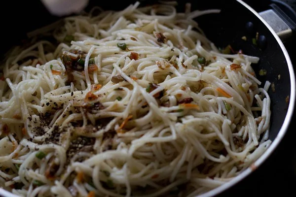
- Toss the whole mixture well and add the chopped spring onion greens or garnish with spring onions while serving.
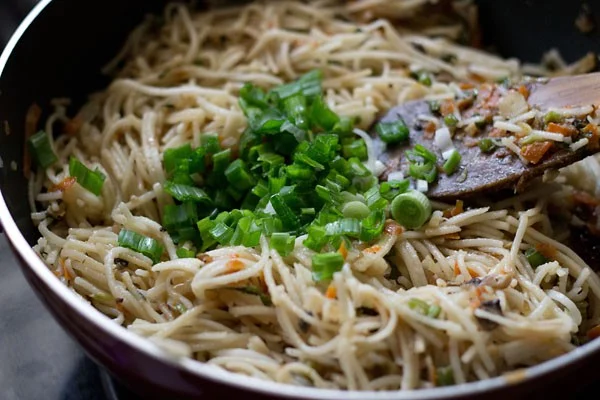
- Serve hakka noodles plain or accompanied with manchurian curry or gobi manchurian or chilli mushroom.
Waffles
Ingredients
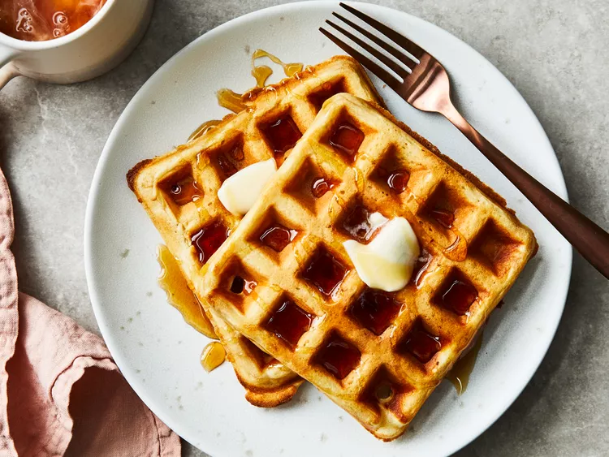
- 2 cups all-purpose flour.
- 1 teaspoon salt.
- 4 teaspoon baking powder.
- 2 tablespoon white sugar.
- 2 eggs.
- 1 ½ cups warm milk.
- ⅓ cup butter, melted.
- 1 teaspoon vanilla extract.
Instructions
- In a large bowl, mix together flour, salt, baking powder and sugar; set aside. Preheat waffle iron to desired temperature.
>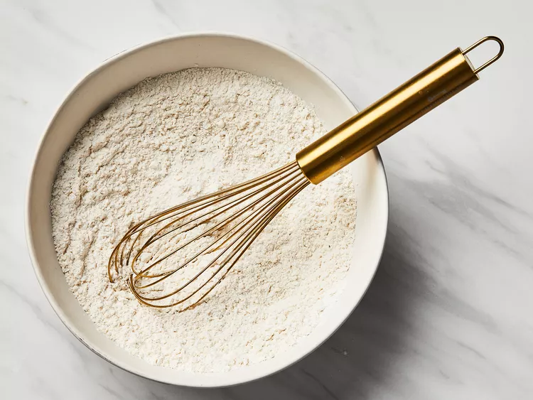
- In a separate bowl, beat the eggs. Stir in the milk, butter and vanilla.
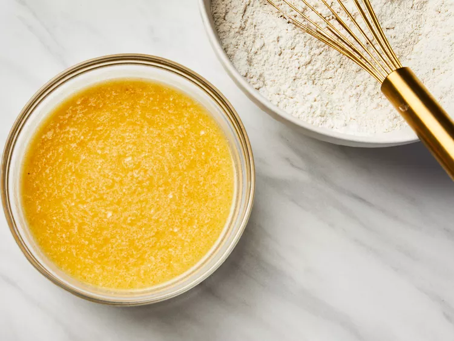
- Pour the milk mixture into the flour mixture; beat until blended.
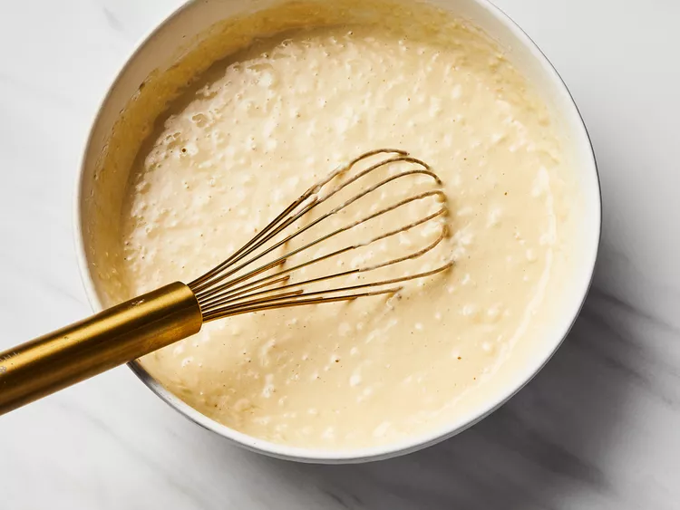
- Ladle the batter into a preheated waffle iron.
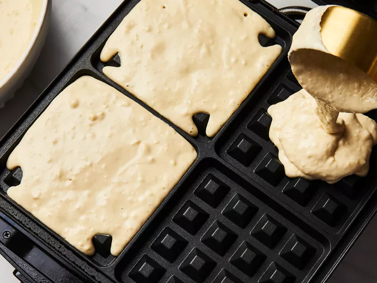
- Cook the waffles until golden and crisp.
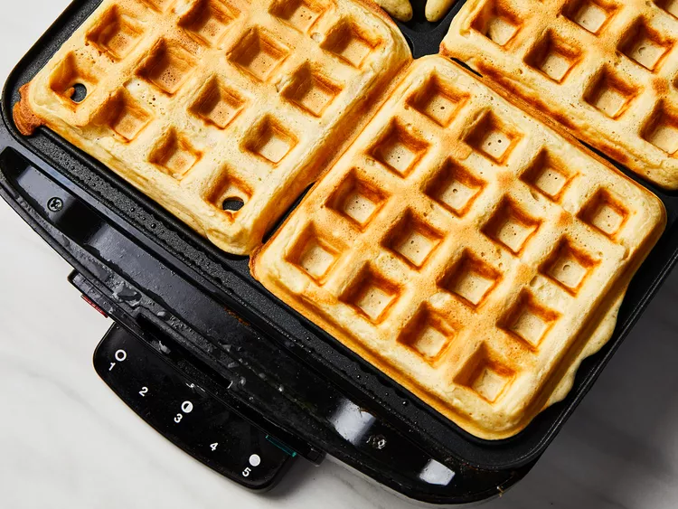
- Serve immediately and enjoy!
Made By Jayden